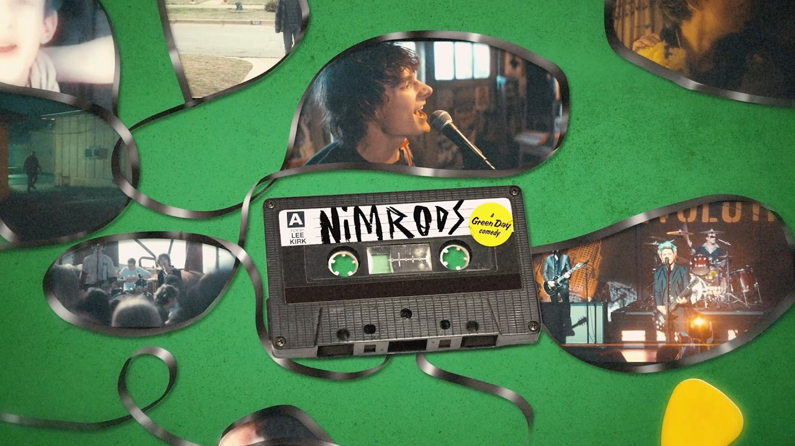

Review
GREEN DAY - I'm Never Gonna R.I.P.

Ich habe mit Green Day so eine Art Hassliebe.
Vielleicht ist Hassliebe aber schon zu dramatisch.
Eher eine alte Jugendliebe, die man irgendwann aus den Augen verloren hat und bei der man trotzdem noch kurz komisch guckt, wenn sie plötzlich wieder vor einem steht.
Dookie hat damals bei mir eingeschlagen wie eine kaputte Bierflasche auf einer Gartenparty.
Nicht elegant.
Nicht subtil.
Aber danach lag überall Glas und alle wussten Bescheid.
Plötzlich kannten Leute Green Day, die vorher vermutlich dachten, Punk sei ein Haarschnittproblem.
Plötzlich liefen diese Songs überall.
Radio.
MTV.
Kinderzimmer.
Schulhöfe.
Und ja:
Man kann jetzt natürlich mit verschränkten Armen in der Ecke stehen und erklären, dass Green Day Pop-Punk nicht erfunden haben.
Stimmt.
Haben sie nicht.
Aber sie haben ihn für sehr viele Menschen sichtbar gemacht.
Ob man ihnen das heute dankbar anrechnet oder übelnimmt, hängt wahrscheinlich davon ab, wie viele kleine Bands man danach mit schlecht gestimmten Gitarren im Jugendzentrum ertragen musste.
Bei mir wurde Green Day irgendwann leiser.
Nicht schlechter.
Nur weiter weg.
Hier und da habe ich natürlich reingehört.
Man kommt an dieser Band ja ungefähr so gut vorbei wie an einem Einkaufswagen mit kaputtem Rad.
Aber dieses alte Kribbeln?
Selten.
Und dann kommt "I'm Never Gonna R.I.P." um die Ecke.
Ausgerechnet.
Ich hatte mit vielem gerechnet.
Mit Stadiongeste.
Mit irgendeinem vertrauten Green-Day-Schlenker.
Mit einem Song, bei dem man nach zehn Sekunden weiß, in welchem Regal er steht.
Bekommen habe ich etwas, das stellenweise klingt, als hätte jemand Elvis Presley durch einen Green-Day-Verstärker gejagt und dabei vergessen, die Sicherung rauszunehmen.
Mehr als einmal musste ich an Jailhouse Rock denken.
Und nein, ich habe nicht heimlich meine Lederjacke gebügelt.
Das Ding hat einfach diesen Rock'n'Roll-Hüftschwung.
Nur eben mit Green-Day-DNA im Blut.
Man hört Billie Joe Armstrong nicht die ganze Zeit mit einem Schild über dem Kopf herumlaufen, auf dem steht:
Hallo, ich bin es.
Aber dann kommt eine Gesangslinie.
Ein kleiner Dreh.
Ein Tonfall.
Und zack:
Da ist sie wieder.
Diese Band.
Nicht als Nostalgie-Karaoke.
Nicht als Dookie-Kopie.
Sondern als Erinnerung daran, dass Green Day immer dann am interessantesten sind, wenn sie nicht versuchen, besonders erwartbar zu sein.
Andere Bands nehmen ihr erfolgreichstes Album einfach noch einmal auf, wechseln zwei Akkorde aus und nennen das dann "zurück zu den Wurzeln".
Green Day haben auf sowas offenbar nicht dauerhaft Lust.
Mal Rockoper.
Mal Broadway-Nachhall.
Mal politischer Bombast.
Jetzt plötzlich Rock'n'Roll für ein Soundtrack-Ding namens NIMRODS.
Kann man mögen.
Muss man nicht.
Aber langweilig ist das nicht.
Und genau da haben sie mich erwischt.
Nicht über Jugendnostalgie.
Nicht über ein billiges "Früher war alles besser".
Sondern über diesen kleinen Moment, in dem ich dachte:
Ach guck.
Die machen immer noch, worauf sie Bock haben.
Der Song macht außerdem ziemlich viel Lust auf dieses ganze NIMRODS-Paket.
Wenn Musik, Bildsprache und dieser alte Kassettensalat im Video dafür sorgen, dass man plötzlich wissen will, was da eigentlich passiert, dann hat so ein Soundtrack-Beitrag schon mehr geschafft als viele brav polierte Singles.
Trotzdem bleibt bei mir dieser Zwiespalt.
Das Kind in mir greift natürlich immer noch reflexartig zu Dookie.
Wobei ...
Nicht einmal das stimmt mehr ganz.
In letzter Zeit erwische ich mich häufiger dabei, die YouTube-Playlist von Mikey And His Uke laufen zu lassen.
Dort wurde Dookie mit Musikern aus der internationalen Punk-Szene neu eingespielt.
Das Projekt ist auch schon wieder ein paar Jahre alt.
Aber es hat etwas, das mir bei alten Klassikern oft fehlt:
Es nimmt die Songs ernst, ohne sie in Bernstein einzuschließen.
Nicht besser.
Anders.
Frischer.
Ein bisschen so, als hätte jemand das alte Tape aus dem Handschuhfach gezogen, einmal ordentlich gegen die Tischkante geklopft und dann gemerkt:
Da lebt ja noch was.
Falls ihr das noch nicht kennt, schaut bei Mikey And His Uke vorbei.
Selbst wenn ihr Dookie auswendig kennt, stolpert ihr dort wieder über kleine Stellen, die ihr längst für selbstverständlich gehalten habt.
Vielleicht ist genau das der Punkt.
Ich brauche 2026 gar kein zweites Dookie.
Das Ding steht da.
Das hat seinen Platz.
Das muss niemand neu erfinden, schon gar nicht Green Day selbst.
Viel spannender finde ich, dass diese Band nach über drei Jahrzehnten immer noch genug Bewegungsdrang hat, um nicht einfach in der eigenen Vergangenheit einzuschlafen.
"I'm Never Gonna R.I.P." ist für mich deshalb keine Rückkehr zu den alten Green Day.
Zum Glück.
Es ist eher ein kleines Lebenszeichen aus einer Ecke, in der ich Green Day gerade nicht gesucht hätte.
Rock'n'Roll.
Soundtrack.
Kassette.
Ein bisschen Elvis im Rückspiegel.
Und irgendwo dazwischen diese alte Band, die immer noch nicht fertig damit ist, komische Haken zu schlagen.
Ich nehme das.
Nicht als Jugendersatz.
Nicht als neues Lieblingslied.
Aber als Erinnerung daran, dass alte Lieben manchmal kurz vorbeikommen dürfen, ohne direkt wieder bei einem einzuziehen.
Das offizielle Video findet ihr hier.